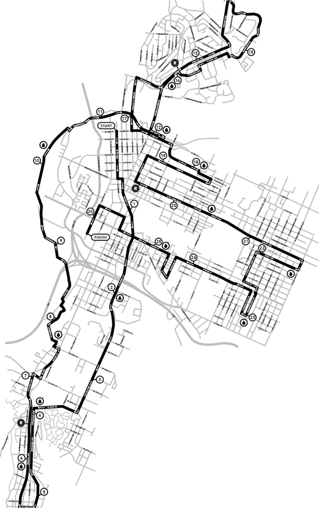

ACTIVITY
FOCUS
EXCITEMENT
The Chattanooga Marathon Brainwaves project will stream electroencephologram data from
runners running the 5K race and the full and half marathon. We will be visulizing this data
live on this website and on the Jumbotron at the finish line. Brainwave data will also be recorded for
more in-depth scientific study. Brainwaves can be used to study the relationship between stress and
performance. They can also be used to understand the relationship between the environment and peformance
in ways that may lead to better race courses.